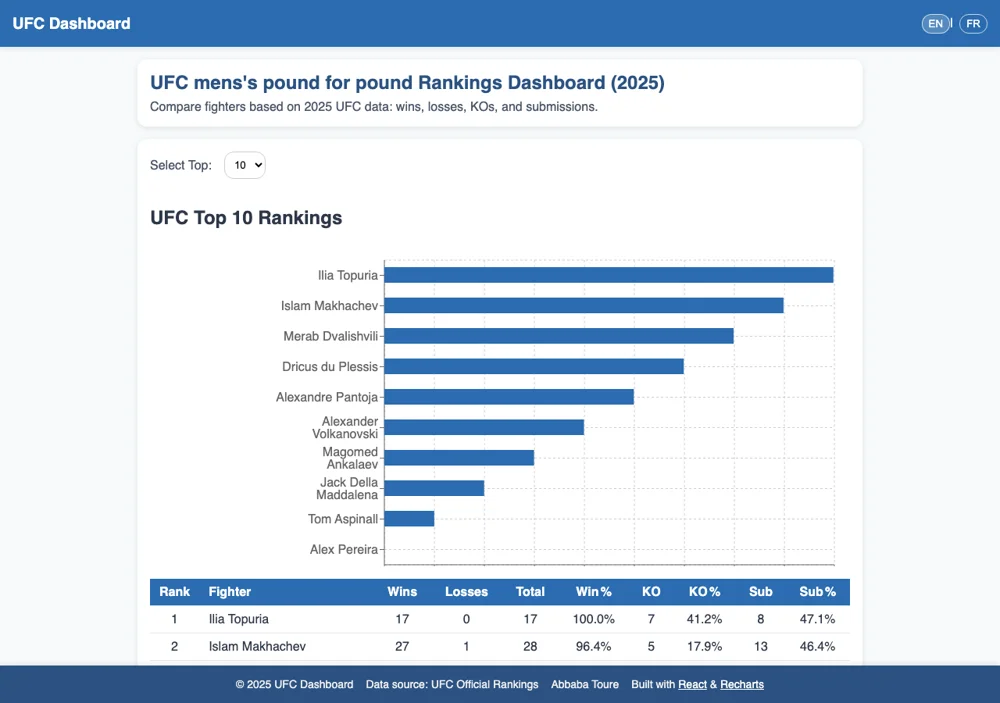
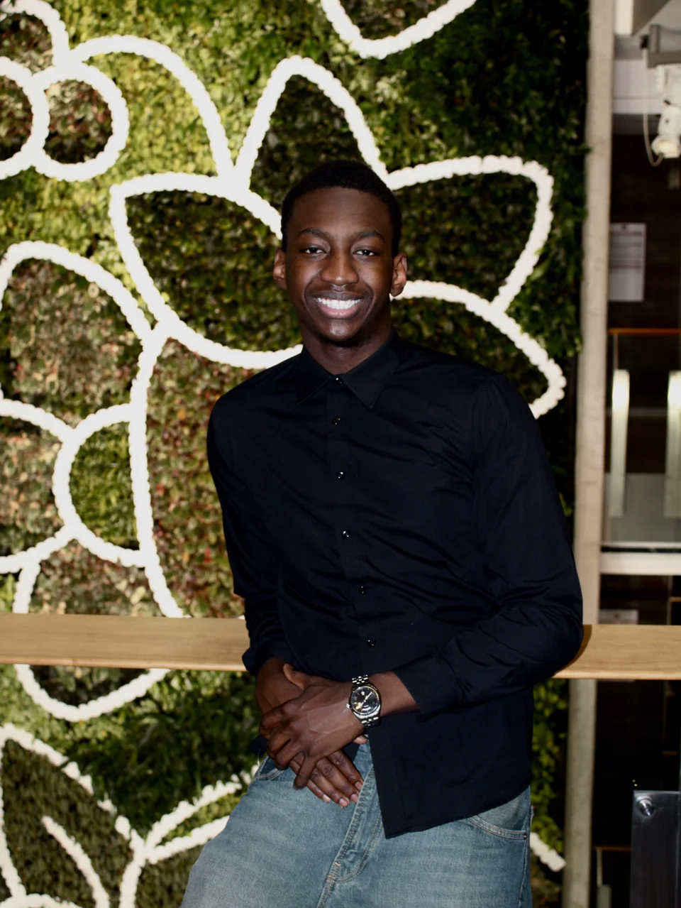
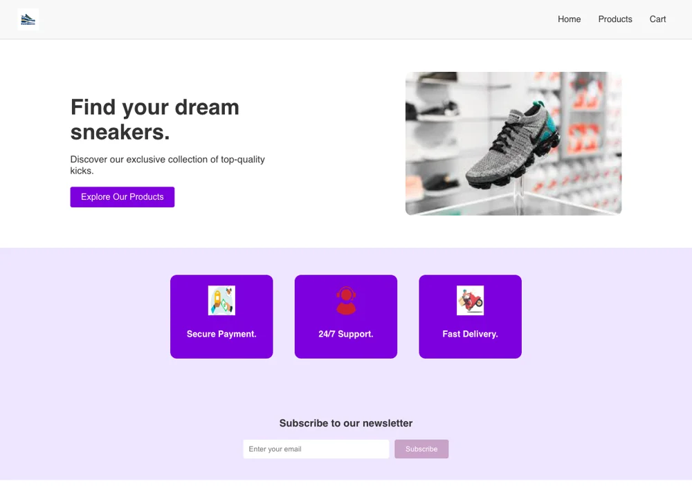
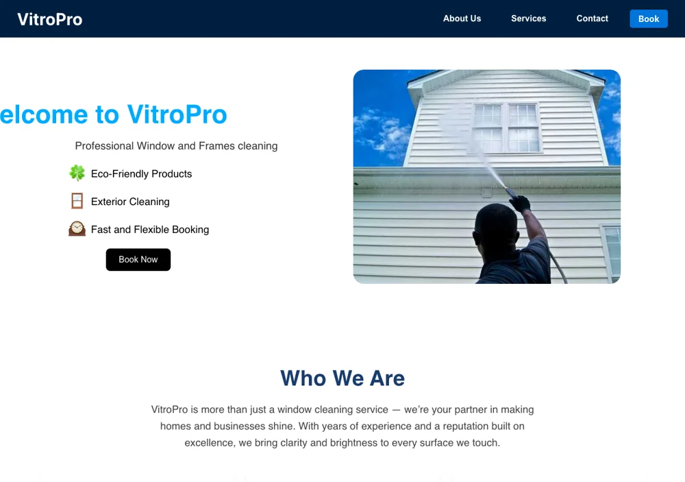

01 / WEB APPLICATION
UFC Dashboard
A dashboard that brings sports data into focus through charts and visual exploration.
SOFTWARE ENGINEERING / UNIVERSITY OF OTTAWA
PORTFOLIO — 2026

A BIT ABOUT WHAT I DO
From a web interface to the deployment pipeline behind it. I’m a software engineering student working across platform infrastructure, automation, and full-stack development.
01 / SELECTED WORK
Web apps, a mobile app, and a few experiments in how software fits together.

01 / WEB APPLICATION
A dashboard that brings sports data into focus through charts and visual exploration.

02 / WEB EXPERIENCE
A responsive shoe-store experience exploring product presentation and shopping interfaces.

03 / SERVICE WEBSITE
A service website designed to help visitors discover professional cleaning services.

04 / BROWSER GAME
A browser-based guessing game built around dynamic interfaces and playful interaction.
05 / ANDROID · TEAM PROJECT
An event-management app with Organizer, Admin, and Attendee roles, CRUD features, and real-time database updates.
06 / SYSTEMS · TEAM PROJECT
A multi-threaded chat system with broadcast messaging, concurrent clients, and server administration controls.
02 / EXPERIENCE
From government applications to deployment infrastructure, I care about making things work—and keeping them that way.
MOST RECENT / MAY — AUG 2026
JSI Telecom / Ottawa, ON
Built a GitHub Actions gate that deploys and integration-tests every pull request against a live Ceph cluster. Made infrastructure easier to run locally, more reliable to ship, and more secure by default.
GLOBAL AFFAIRS CANADA
Led the migration of a Nightwatch.js automation suite to Playwright. Demonstrated the new approach and secured team approval to migrate the full repository.
Built end-to-end and regression suites across DEV/QA, authored XUnit/C# tests with NSubstitute for ASP.NET Core services, and improved test stability with data-test-ids and page-object patterns. Managed pipelines, test cases, and pull requests in Azure DevOps.
UNIVERSITY OF OTTAWA
Made internal tools and information easier to use: interactive support dashboards, cleaner Workday data, and improved intranet experiences.
Migrated support tickets from TopDesk to Jira, developed Google Sites and Confluence pages, tested ERP workflows through role simulations, and wrote launch documentation in SharePoint.
03 / ABOUT ME
I like understanding how the pieces fit together—from what someone sees on a screen to the infrastructure running underneath.
I’m studying Software Engineering at the University of Ottawa, with an expected graduation in December 2027. Co-op has taken me from internal tools to government test automation and platform infrastructure. Each experience has shaped how I build: with care, collaboration, and an eye for what could work better.
BASc, Software Engineering (Co-op)
Expected December 2027 ·
Dean’s Honour List
04 / NEXT UP
A co-op opportunity, a project, or a conversation
about
building better software. I’d love to hear it.